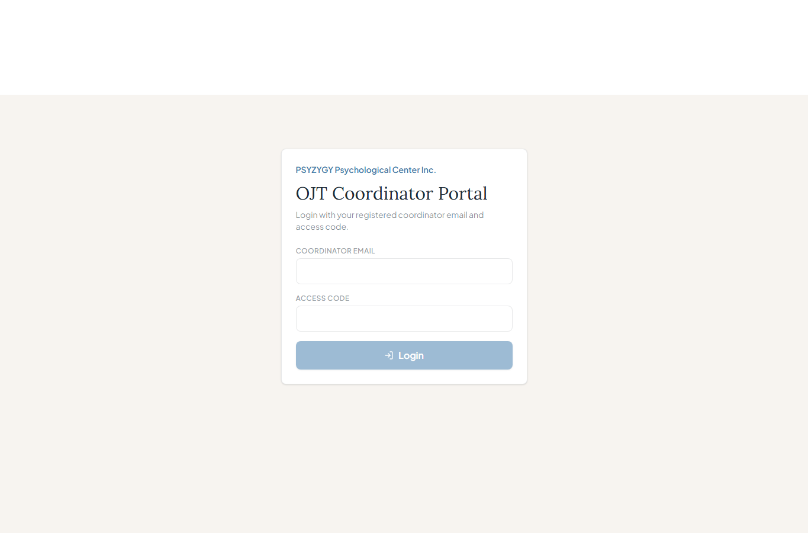

OJT Coordinator User Manual
A simple guide for school coordinators who need to check student OJT status.
For school coordinators

Actual screenshot from the website.
Big idea: The coordinator portal lets a school coordinator check only their own students.
1. What You Need
- Your coordinator email.
- Your access code from the clinic admin.
- The page link: /ojtcoordinator.
2. How to Login
- Open /ojtcoordinator.
- Type your coordinator email.
- Type your access code.
- Click Login.
3. What You Can See
Students
How many OJT students are linked to your school.
Rendered Hours
Hours already approved by the clinic.
Pending Logs
Logs waiting for clinic review.
4. Find a Student
- Use the search box.
- Type the student's name, course, email, or status.
- The list will show matching students.
5. Read the Student Status
- Active means the student is still doing OJT.
- Completed means the student has finished.
- Withdrawn means the student stopped.
Remember: Coordinators can view status only. If something is wrong, contact the clinic admin.